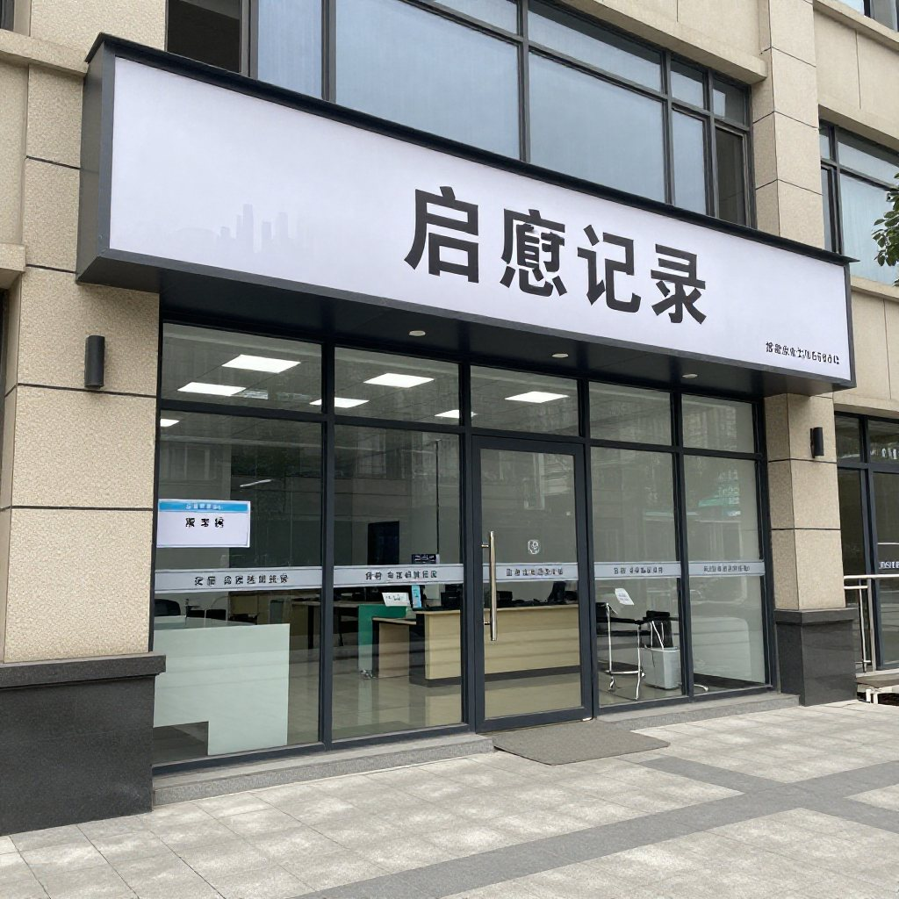

天還沒亮透，新會天馬村的霧還沒散，吳叔已經蹲在柑圍田埂邊抽煙了。這是他幾十年沒改的習慣——每天早起，先看看柑樹，才下地幹活。國慶假期首日，飛豬數據顯示國內門票預訂量同比增長近30%（據證券時報報道），遊客湧向小城與鄉村；而在這片柑圍裡，日子還是照舊。
「今日新聞你睇咗未？」
「睇咗。話有啲外地皮打住新會陳皮嘅旗號賣，被查咗11噸。」
吳嬸沒說話，低頭喝粥。那幾天村裡人人自危，怕外地皮把整個新會陳皮的名聲搞臭，連累了正經做皮的人。
吳叔站起身，望向那片綠油油的柑圍。
「我阿爸嗰代都冇放棄呢片地，到我這一代，唔會因為幾粒老鼠屎就縮。」
這是2026年的秋天，距離那場波及整個新會陳皮產業的信任危機，已經過去了兩個月。
一、爛場風雨：11噸假冒產品被銷毀之後
這場危機，始於八月末的一次行業抽檢。省市場監管局到新會區抽查，發現部分商戶以廣西皮、湖南皮冒充新會陳皮出售，更有甚者，用外地柑皮開皮後做舊，貼上「新會核心產區」的標籤賣高價。執法部門一次性銷毀了11噸假冒產品，同步開展專項行動。
消息一出，市場馬上有了反應：採購商開始觀望，價格出現波動，連帶着正經果農的鮮果也賣不起價。
「有幾日真係幾難捱。中間商壓價，話市場上假皮多，唔敢拿貨。嗰幾日吳嬸成晚瞓唔着，喺床上輾轉來輾轉去。」
「我同佢講，命係睇柑樹，唔係睇市場。柑樹唔呃人，你落咁多年功夫，佢知。你呃柑樹，佢就唔掛你果。」
吳叔是新會天馬村人，今年五十八歲，種植新會柑三十六年；吳嬸來自茶坑，嫁過來也跟着種了二十八年。兩人結婚時，公婆分給他們兩畝柑圍，現在已經擴到十二畝。三代人的歲月，都泡在這片土地上。
二、最笨的方法：每一棵樹都有記錄
那幾日村裡開過幾次會，有人說要去省裡反映情況，有人說聯合起來打假，也有人說乾脆先歇一造。吳叔沒去開會，他每日照常下地，修枝、淋水、施肥。
「你外面點亂，我管唔到。我淨係可以管好自己棵樹。」
吳嬸的應對更具體——她把過去三年每一批鮮果的出貨記錄全部翻出來，有單有據：誰來收的、幾時摘的、送到哪裡，一清二楚。
「我同採購商講，你隨時嚟，我隨時可以帶你去看樹。呢樹果係邊個摘、幾時摘，我都記低。你信我，我唔會使你失望；你唔信我，我送畀你試食，試完再決定。」
有幾個深圳採購商真的來了。吳嬸帶着他們走柑圍，看每一棵樹的種植記錄，現場開皮試食。
「阿嬸，我賣陳皮十幾年，見過呃人嘅，冇見過咁老老實實嘅。」
那一造鮮果，最終還是賣出去了，價格還比村裡其他人高一點。
值得一提的是，新會區農業農村局今年啟動了新會柑鮮果產量申報核定工作：種植戶須在7、8、9月每月20日前完成線上申報，數據一經提交不可更改；10月起區、鎮、村三級幹部會落田現場核定。吳嬸登記每一棵樹的習慣，正好對上了這道新閘門。
三、陳伯的二刀法：手藝就是護城河

信任危機最激烈那幾日，陳伯來找過吳叔。陳伯今年七十三歲，住在茶坑村，種柑四十七年，最出名是一手「二刀法」開皮——一刀開前、二刀開後，皮形對稱，紋理靚，曬出來的陳皮品相好。
「而家市面上好多人用機器開皮，開得快，但皮形亂，曬出嚟唔靚。好快就有人發覺，新會陳皮同外地皮最難仿嘅一樣嘢——就係呢種傳統手工。」
「你唔好斬樹，唔好縮規模，守住你棵樹嘅技術，用傳統方法做。你唔需要呃人，你嘅手藝就係你嘅護城河。」
吳叔聽進去了。他重新挑揀了一番，決定把品相最好的那一批柑，全部用二刀法開皮、天然生曬、不做任何做舊——一部分留給自己做陳皮，一部分賣給熟客。吳嬸把曬場收拾整齊，從前只留兩成面積做陳皮，現在擴大到五成。
「我唔信個市場永遠咁樣。信任危機過咗，正正經經做嘢嘅人總會返嚟。」
果然，九月中市場開始慢慢恢復。隨着執法部門加大打擊力度，消費者逐步建立起辨別能力——真正的新會陳皮有獨特的香氣和口感，外地皮做不出那種山坑水塘氣。吳叔吳嬸那一造陳皮定價比一般貨高兩成，但很多熟客回頭，甚至介紹新客來。
「我唔減價。減價，我對唔住自己嘅手藝。」
四、下一造：十月尾摘，三年後再出
九月底，新會陳皮村舉辦第九屆新會陳皮預售季，吳叔吳嬸沒去現場。
「預售季係中間商同大客戶傾嘅。我哋小農戶唔夠人哋爭，我寧可喺柑圍等客上門。」
「其實我哋都收到採購商電話，有廣州茶莊老闆，有深圳電商，問今年皮幾時有貨。我話，十月尾，等我哋摘完呢造先。」
老兩口現在的計劃是：十月尾摘這一造，天然生曬，存放三年後再出一批年份陳皮。
「三年後市場點樣？我唔知。但新會陳皮唔會死——呢樣嘢喺新會生咗一千幾年，你搞唔死佢。」
臨走時，吳嬸從屋裡拿出一個鐵盒，裡面裝着幾片1998年的老陳皮，是她當年嫁過來時婆婆給的。「你睇，幾十年陳皮，仲係咁香。」她把陳皮遞過來讓我聞，「新會陳皮最靚就係呢一點，時間會證明一切。」
吳叔站在柑圍邊，望着那些掛滿枝頭的新會柑。
「市場好與唔好，柑樹照樣長。人做啲嘢，騙得一時，騙唔到一世。呢造爛場風雨，淋完之後，仲有下一造。」
常見問題
外地皮冒充新會陳皮怎麼辨別？一看油室：新會陳皮油室明顯，透光看有密集小點；二聞香氣：有獨特山坑氣，柑橘香與藥香混合；三摸質地：年份越老皮身越薄且輕；四嘗口感：開水泡後甘香醇滑，不苦澀。
2026年這場信任危機會影響正常果農嗎？短期有衝擊，長期反而是洗牌。執法部門加大打擊力度、市場逐步規範化，對堅持源頭溯源與傳統工藝的正規果農是利好。
「二刀法」是什麼？新會陳皮傳統開皮法：第一刀從果頂向果底正中開，第二刀在果背弧線處再開一刀，使兩片皮形狀對稱、果蒂處成Y形，曬乾後皮形美觀，是正宗新會陳皮的標誌之一。
家庭存放新會陳皮有什麼講究？避光、乾燥、通風，溫度25℃以下、濕度70%以下。生曬陳皮前三年要多翻曬，後期密封存放，定期檢查翻動。
新會柑產量申報核定跟果農有什麼關係？種植戶須在7、8、9月每月20日前完成線上產量申報，數據提交後不可更改；10月起區、鎮、村三級幹部落田現場核定，從源頭堵住虛標產量與銷量的空間。
國慶假期想來天馬村看柑圍，可以嗎？可以。十月是新會柑由青轉紅的時節，柑圍裡能看到掛果與開皮；來新會陳皮村南門牌坊G04找滢滢姐，店裡常年備着熱茶，可當面看皮、免費試喝。
結語
這一造爛場風雨，淋濕了不少人的心氣，但也把真正做事的人襯得更清楚。吳叔吳嬸沒有去打價格戰，他們登記每一棵樹、守住二刀法、把曬場從兩成擴到五成——用最笨的方法，回應最難的局面。
想親手摸一摸今年的新會柑、看一次二刀法開皮，國慶來新會陳皮村南門牌坊G04找滢滢姐坐坐。想看信任危機之後產區的整體變化，看這篇《陳皮熱點日報：新會產區政策密集發布，產業數字化提速》；想知道自己在市場上怎麼避坑，翻翻這篇《四招教你辨別新會陳皮真假》。
下期預告：十月尾新會柑開摘，滢滢姐會跟着吳叔吳嬸下一次柑圍，從青皮到大紅皮，把「什麼時候摘、摘哪一種」講清楚——同一棵樹，早摘十天和晚摘十天，香氣差別有多大，鏡頭下見分曉。